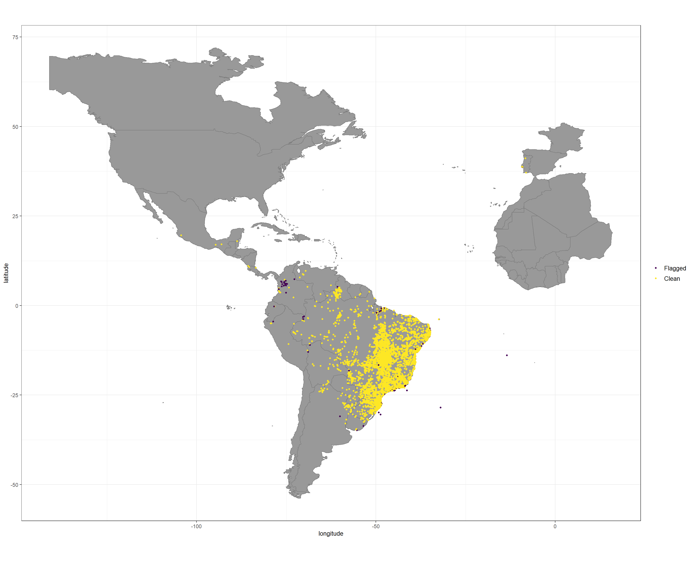
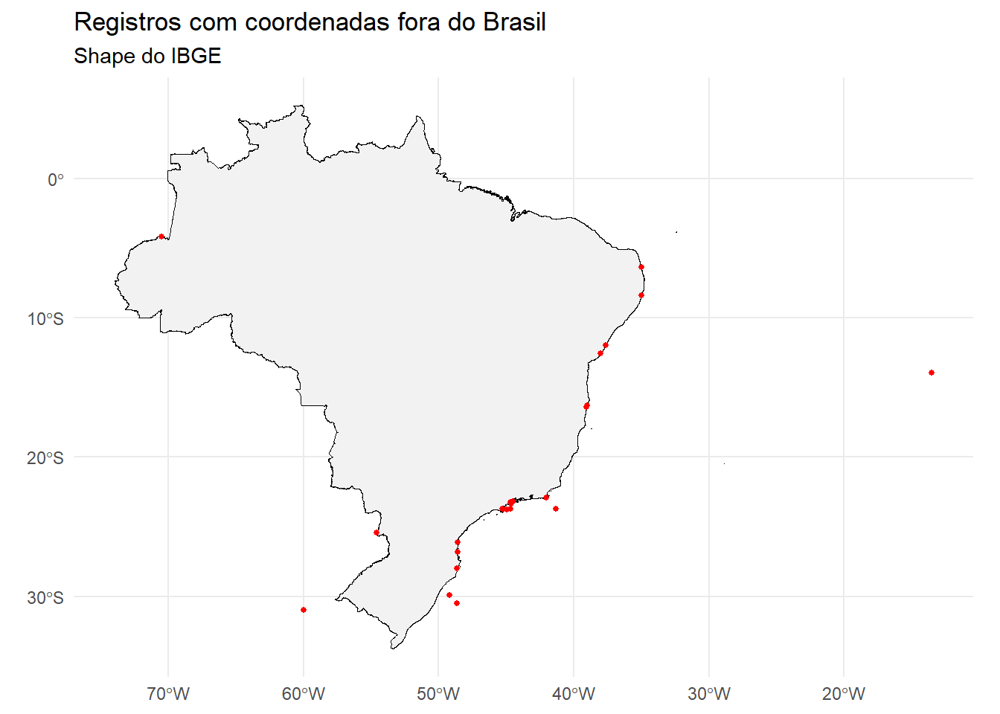

library(CoordinateCleaner)
library(countrycode)
library(data.table)
library(geosphere)
library(measurements)
library(readODS)
library(readr)
library(rnaturalearth)
library(rnaturalearthdata)
library(rstudioapi)
library(sf)
library(tidyverse)Detector de Erros Jabot
1 Introdução
Este script identifica uma série de erros nos registros do Jabot. O próprio Jabot tem um sistema que verifica alguns desses problemas, mas em alguns testes, as duas ferramentas encontram resultados diferentes. Em alguns casos, essa diferença pode ser explicada pelo conjunto de dados disponível. O input principal deste script é a planilha de registros exportada pelo Jabot. Assim sendo, informações que não estejam associadas a um registro são inacessíveis para este código. Por exemplo, uma espécie registrada no banco taxonômico do Jabot, mas sem nenhuma exsicata registrada vai ser considerada pelo sistema de detecção de erros do Jabot, mas não pode ser detectada por este método. Em outras instâncias, a verificação feita pelo Jabot deixa passar alguns erros que este script detecta.
Cada verificação feita por este script gera um objeto da classe data.frame com todos os registros que reprovaram no teste. Todos os objetos de resultado de teste têm nomes descritivos em letras maiúsculas. Em alguns casos, o objeto de resultado do teste tem colunas adicionais que não existem na planilha original ou colunas em uma ordem diferente. Objetos nomeados com letras minúsculas são objetos criados para facilitar a consulta a informações e a realização de testes, mas não armazenam o resultado de nenhuma verificação. Por fim, para alguns testes, a reprovação de um registro implica a existência de um erro, e, portanto, a necessidade de correção. Para outros, a reprovação indica apenas um erro em potencial, de modo que nem todos os registros reprovados em testes devem passar por algum tipo de edição.
2 Preparação
2.1 Carrega Pacotes
2.2 Carrega Dados
Primeiro, exporte todos os registros do Jabot. Para fazer isso, siga os passos a seguir:
Acesse o sistema de consulta do Jabot
Marque a opção correspondente à coleção que quer verificar. Para o herbário do IBGE é
IBGE - HERBÁRIO IBGEClique em
ConsultarRole até o final da página
Clique em
Exportare depois emCSV (Padrão)Salve o arquivo
planilhapadrao.csvna mesma pasta deste scriptRode os blocos de código no R
# Define a pasta deste script como working directory
setwd(dirname(getActiveDocumentContext()$path))# Carrega planilha completa do Jabot
herbario_ibge <- read.csv("planilhapadrao.csv", sep = ";")3 Testes
3.1 Dados de Coleta
3.1.1 Ano de coleta anterior a 1760
O sistema de verificação do Jabot não está detectando este erro.
# Ano de coleta anterior a 1760
ANO_COL_MENOR_QUE_1760 <- herbario_ibge %>%
filter(collyy < 1760)3.1.2 Ano de determinação anterior a 1760
# Ano de determinação anterior a 1760
ANO_DET_MENOR_QUE_1760 <- herbario_ibge %>%
filter(., detyy < 1760)3.1.3 Ano de coleta posterior ao atual
# Ano de coleta posterior ao atual
ANO_COL_POSTERIOR_AO_ATUAL <- herbario_ibge %>%
filter(., collyy > year(Sys.Date()))3.1.4 Ano de determinação posterior ao atual
# Ano de determinação posterior ao atual
ANO_DET_POSTERIOR_AO_ATUAL <- herbario_ibge %>%
filter(., detyy > year(Sys.Date()))3.1.5 Ano de coleta com número de dígitos diferente de 4
# Ano de coleta com número de dígitos diferente de 4
ANO_COL_DIFERENTE_DE_4_DIGITOS <- herbario_ibge %>%
filter(., nchar(collyy) != 4)3.1.6 Ano de determinação com número de dígitos diferente de 4
# Ano de determinação com número de dígitos diferente de 4
ANO_DET_DIFERENTE_DE_4_DIGITOS <- herbario_ibge %>%
filter(., nchar(detyy) != 4)3.1.7 Ano de coleta vazio
# Ano de coleta vazio
ANO_VAZIO <- herbario_ibge %>%
filter(., is.na(collyy) == TRUE | collyy == "")3.1.8 Mês de coleta inválido
MES_COLETA_INVALIDO <- herbario_ibge %>%
filter(., is.na(collmm) == FALSE & !(collmm %in% c(1:12)))3.1.9 Mês de determinação inválido
MES_DET_INVALIDO <- herbario_ibge %>%
filter(., is.na(detmm) == FALSE & !(detmm %in% c(1:12)))3.1.10 Dia de coleta inválido
DIA_COLETA_INVALIDO <- herbario_ibge %>%
filter(., is.na(colldd) == FALSE & !(colldd %in% c(1:31)))3.1.11 Dia de determinação inválido
DIA_DET_INVALIDO <- herbario_ibge %>%
filter(., is.na(detdd) == FALSE & !(detdd %in% c(1:31)))3.1.12 Dia de coleta sem mês
DIA_COLETA_SEM_MES <- herbario_ibge %>%
filter(., is.na(collmm) == TRUE & is.na(colldd) == FALSE)3.1.13 Dia de determinação sem mês
DIA_DET_SEM_MES <- herbario_ibge %>%
filter(., is.na(detmm) == TRUE & is.na(detdd) == FALSE)3.1.14 Data de determinação inválida
Detecta datas inválidas como dia 31 em meses de 30 dias e dia 29/02 em anos não-bissextos.
herbario_datas <- herbario_ibge %>%
mutate(., data_coleta = paste(collyy, collmm, colldd, sep = "-")) %>%
mutate(., data_determinacao = paste(detyy, detmm, detdd, sep = "-"))
data_det_inv <- grep("NA", herbario_datas$data_determinacao)
DATA_DET_INVALIDA <- herbario_datas[-c(data_det_inv),] %>%
mutate(., data_determinacao = as.Date(data_determinacao, format = "%Y-%m-%d")) %>%
filter(., is.na(data_determinacao) == TRUE)3.1.15 Data de coleta inválida
Detecta datas inválidas como dia 31 em meses de 30 dias e dia 29/02 em anos não-bissextos.
herbario_datas <- herbario_ibge %>%
mutate(., data_coleta = paste(collyy, collmm, colldd, sep = "-")) %>%
mutate(., data_determinacao = paste(detyy, detmm, detdd, sep = "-"))
data_col_inv <- grep("NA", herbario_datas$data_coleta)
DATA_COLETA_INVALIDA <- herbario_datas[-c(data_col_inv),] %>%
mutate(., data_coleta = as.Date(data_coleta, format = "%Y-%m-%d")) %>%
filter(., is.na(data_coleta) == TRUE)3.1.16 Ano/dia de coleta posterior ao ano/dia de identificação
Os testes deste bloco verificam duas coisas:
Se o ano de coleta é posterior ao ano de identificação
Se a data de coleta é posterior à data de identificação
O teste 2 é limitado e só funciona para registros de data completos (dia, mês e ano). Se faltar alguma dessas informações em alguma das duas datas, o teste não faz a comparação.
# Ano de coleta posterior ao ano de identificação
ANO_COLETA_APOS_ANO_DETERMINACAO <- herbario_ibge %>%
filter(., collyy > detyy)
# Dia de coleta posteiror ao dia de identificação
DIA_COLETA_APOS_DIA_DET <- herbario_ibge %>%
mutate(., data_coleta = as.Date(with(., paste(collyy, collmm, colldd, sep = "-")),
format = "%Y-%m-%d")) %>%
mutate(., data_det = as.Date(with(., paste(detyy, detmm, detdd, sep = "-")),
format = "%Y-%m-%d")) %>%
filter(., data_coleta > data_det)3.1.17 Número de tombo duplicado
# Número de tombo duplicado
TOMBO_DUPLICADO <- herbario_ibge %>%
filter(., duplicated(herbario_ibge$codbarras) == TRUE)3.1.18 Herbário de origem vazio
# Herbário de origem vazio
HERBARIO_VAZIO <- herbario_ibge %>%
filter(., siglacolbotorigem == "")3.1.19 Nome do determinador com ponto (.)
# Nome do determinador com ponto (.)
DETERMINADOR_COM_PONTO <- herbario_ibge %>%
filter(., grepl("\\.", herbario_ibge$detby) == TRUE)3.1.20 Nome do coletor principal com ponto (.)
# Nome do coletor principal com ponto (.)
COLETOR_COM_PONTO_1 <- herbario_ibge %>%
filter(., grepl("\\.", herbario_ibge$collector) == TRUE)3.1.21 Nome dos coletores secundários com ponto (.)
# Nome dos coletores secundários com ponto (.)
COLETOR_COM_PONTO_2 <- herbario_ibge %>%
filter(., grepl("\\.", herbario_ibge$addcoll) == TRUE &
grepl("et al", herbario_ibge$addcoll) == FALSE)3.1.22 et al. escrito errado
# et al. escrito errado
ET_AL_ERRADO <- herbario_ibge %>%
filter(., grepl("et. al", herbario_ibge$addcoll) == TRUE |
grepl("et al$", herbario_ibge$addcoll) == TRUE |
grepl("etal", herbario_ibge$addcoll) == TRUE)3.1.23 Sem coletor
# Sem coletor
SEM_COLETOR <- herbario_ibge %>%
filter(., is.na(collector) == TRUE)3.1.24 Coletor ativo por mais de 50 anos
É pouco provável que um pesquisador tenha uma vida de coleta tão longeva.
# Coletor ativo por mais de 50 anos
COLETOR_50_ANOS <- herbario_ibge %>%
filter(is.na(collyy) == FALSE) %>%
group_by(collector) %>%
filter(max(collyy, na.rm = TRUE) - min(collyy, na.rm = TRUE) > 50) %>%
ungroup() %>%
select(numtombo, collector, number, collyy) %>%
arrange(collector, collyy)3.1.25 Sem número de coleta
# Sem número de coleta
SEM_NUMERO_DE_COLETA <- herbario_ibge %>%
filter(., is.na(number) == TRUE)3.1.26 Número de coleta duplicado
# Número de coleta duplicado
NUMERO_DE_COLETA_DUPLICADO <- herbario_ibge %>%
group_by(collector, number) %>%
filter(n() > 1) %>%
ungroup() %>%
filter(., !grepl("s.n", number)) %>%
arrange(collector, number) %>%
select(codbarras, numtombo, collector, number, everything())3.1.27 Número de coleta igual número de tombo
# Número de coleta igual número de tombo
NUM_COLETA_IGUAL_TOMBO <- herbario_ibge %>%
filter(., numtombo == number) %>%
select(codbarras, numtombo, collector, number, everything())3.1.28 Sem altitude
# Sem altitude
ALTITUDE_VAZIO <- herbario_ibge %>%
filter(., altprof == "" | is.na(altprof) == TRUE)3.1.29 Altitude menor que 0
# Altitude menor que 0
ALTITUDE_MENOR_QUE_0 <- herbario_ibge %>%
mutate(., altprof = as.numeric(altprof)) %>%
filter(., altprof < 0)3.1.30 Altitude maior que o Everest
ALTITUDE_MAIOR_QUE_EVEREST <- herbario_ibge %>%
mutate(., altprof = as.numeric(altprof)) %>%
filter(., altprof > 8849)3.1.31 Sem unidade de medida de altitude
# Sem nidade de medidade de altitude
SEM_UNIDADE_ALTITUDE <- herbario_ibge %>%
filter(., unidmedaltprof == "" & altprof != "")3.1.32 Unidade de medida de altitude diferente de metro
# Unidade de altitude diferente de metros
ALTITUDE_EM_OUTRA_UNIDADE <- herbario_ibge %>%
filter(., unidmedaltprof != "m." & altprof != "")3.1.33 Erro na altitude
Detecta letras e espaço vazios na coluna de altitude.
# Erro na altura
altitude_errada <- grep("[[:alpha:]]| ", herbario_ibge$altprof)
ERRO_NA_ALTITUDE <- herbario_ibge[c(altitude_errada),] %>%
filter(., altprof != "")3.1.34 Altura menor ou igual a 0
# Altura menor ou igual a 0
ALTURA_0_OU_MENOR <- herbario_ibge %>%
filter(., altura != "" & as.numeric(altura) <= 0)Warning: There was 1 warning in `filter()`.
ℹ In argument: `altura != "" & as.numeric(altura) <= 0`.
Caused by warning:
! NAs introduzidos por coerção3.1.35 Altura maior que a da árvore mais alta do mundo
A árvore mais alta conhecida tem aproximadamente 116 m de altura. Qualquer registro com altura maior do que essa provavelmente está errado.
# Altura maior que a da árvore mais alta do mundo
ALTA_DEMAIS_M <- herbario_ibge %>%
filter(., as.numeric(altura) > 116 & unidmedaltura == "m.")Warning: There was 1 warning in `filter()`.
ℹ In argument: `as.numeric(altura) > 116 & unidmedaltura == "m."`.
Caused by warning:
! NAs introduzidos por coerção3.1.36 Altura maior ou igual a 200 cm
É improvável que uma planta com mais de 2 metros de altura seja medida em centímetros.
# Altura maior que 200 cm
ALTA_DEMAIS_CM <- herbario_ibge %>%
filter(., as.numeric(altura) > 200 & unidmedaltura == "cm.")Warning: There was 1 warning in `filter()`.
ℹ In argument: `as.numeric(altura) > 200 & unidmedaltura == "cm."`.
Caused by warning:
! NAs introduzidos por coerção3.1.37 Sem unidade de medida de altura
# Sem unidade de medidade de altura
SEM_UNIDADE_ALTURA <- herbario_ibge %>%
filter(., unidmedaltura == "" & altura != "")3.1.38 Hábito e altura incompatíveis
# Hábito e altura incompatíveis
HABITO_ALTURA_INCOMPATIVEL <- herbario_ibge %>%
filter((habito == "Erva" & altura > 5 & unidmedaltura == "m.") |
(habito == "erva" & altura > 5 & unidmedaltura == "m.") |
(habito == "Herbácea" & altura > 5 & unidmedaltura == "m.") |
(habito == "Árvore" & altura < 0.5 & unidmedaltura == "m.") |
(habito == "árvore" & altura < 0.5 & unidmedaltura == "m.") |
(habito == "Arvoreta" & altura < 0.5 & unidmedaltura == "m.")) %>%
select(codbarras, numtombo, family, genus, sp1, habito, altura, unidmedaltura, everything())3.1.39 Hábito incomum na família
A ideia deste teste é encontrar erros no preenchimento do hábito. Isso é feito filtrando hábitos que ocorram em menos do que 10% dos registros de cada família.
# Hábito incomum na família
habitos_por_familia <- herbario_ibge %>%
filter(family != "", habito != "") %>%
group_by(family, habito) %>%
summarise(n = n(), .groups = "drop") %>%
group_by(family) %>%
mutate(total = sum(n), freq_rel = round((n / total), 2)) %>%
ungroup() %>%
arrange(family, desc(n))
HABITO_INCONSISTENTE_COM_FAMILIA <- habitos_por_familia %>%
filter(freq_rel < 0.1)3.1.40 Hábito incomum no gênero
# Hábito incomum no gênero
habitos_por_genero <- herbario_ibge %>%
filter(genus != "", habito != "") %>%
group_by(family, genus, habito) %>%
summarise(n = n(), .groups = "drop") %>%
group_by(genus) %>%
mutate(total = sum(n), freq_rel = round((n / total), 2)) %>%
ungroup() %>%
arrange(family, genus, desc(n))
HABITO_INCONSISTENTE_COM_GENERO <- habitos_por_genero %>%
filter(freq_rel < 0.1)3.1.41 Hábito incomum na espécie
# Hábito incomum na espécie
habitos_por_especie <- herbario_ibge %>%
filter(sp1 != "", habito != "") %>%
group_by(family, genus, sp1, habito) %>%
summarise(n = n(), .groups = "drop") %>%
group_by(genus, sp1) %>%
mutate(total = sum(n), freq_rel = round((n / total), 2)) %>%
ungroup() %>%
arrange(family, genus, sp1, desc(n))
HABITO_INCONSISTENTE_COM_ESPECIE <- habitos_por_especie %>%
filter(freq_rel < 0.1)3.1.42 Erro na altura
Detecta letras e espaço vazios na coluna de altura.
# Erro na altura
altura_errada <- grep("[[:alpha:]]| ", herbario_ibge$altura)
ERRO_NA_ALTURA <- herbario_ibge[c(altura_errada),] %>%
filter(., altura != "")3.1.43 Herbário ausente na lista do Index Herbariorum
Compara os herbários de origem à lista do Index Herbariorum, publicada pelo Jardim Botânico de Nova York.
#Herbário ausente na lista do Index Herbariorum
herbarios_origem <- as.data.frame(table(herbario_ibge$siglacolbotorigem))
index_herbariorum <- read.csv("eparties-herbarium-04222026.csv",
fileEncoding = "UTF-16LE") # Essa versão parece ter vindo com algum erro no encoding, mas esse parâmetro corrige o problema
HERBARIOS_AUSENTES_IH <- anti_join(herbarios_origem, index_herbariorum,
by = join_by(Var1 == NamOrganisationAcronym))3.1.44 Outras verificações
Esse bloco sumariza informações de algumas colunas para auxiliar a detecção de erros diversos. Se identificar algum erro, abra o data frame herbario_ibge, clique em Filter e vá até a coluna com a informação incorreta. Digite a informação que deseja corrigir para encontrar a linha onde ela está.
3.1.44.1 Hábito
#Hábito
habito <- as.data.frame(table(herbario_ibge$habito))3.1.44.2 Hábitat
#Hábitat
habitat <- as.data.frame(table(herbario_ibge$habitat))3.1.44.3 Status de tipo
#Status de tipo
tipos <- as.data.frame(table(herbario_ibge$typestat))3.1.44.4 Coletor principal
#Coletor principal
coletores <- as.data.frame(table(herbario_ibge$collector))3.1.44.5 Determinador
#Determinador
determinadores <- as.data.frame(table(herbario_ibge$detby))3.2 Taxonomia
Os testes dessa seção se baseiam na taxonomia do Reflora. O arquivo taxon.txt contém a lista oficial de espécies e pode ser baixado neste link. As atualizações no Reflora são mensais, então convém baixar de novo com certa frequência.
3.2.1 Espécies registradas no Jabot
# Espécies registradas no Jabot
especies <- herbario_ibge %>%
filter(sp2 == "" | is.na(sp2) == TRUE) %>% # Remove subespécies e variedades
select(., c( family, genus, sp1, author1)) %>%
mutate(species = paste(genus, sp1, sep = " "), .before = 2, .keep = "unused") %>%
distinct() %>%
filter(species != "" & species != " ") %>%
arrange(family, species) %>%
.[grep("[[:alpha:]] [[:alpha:]]", .$species),]3.2.2 Família escrita sem o sufixo -aceae
# Família escrita sem o sufixo -aceae
FAMILIA_SEM_ACEAE <- herbario_ibge %>%
filter(., grepl("ACEAE$", herbario_ibge$family) == FALSE)3.2.3 Gêneros sem família
# Gêneros sem família
GENERO_SEM_FAMILIA <- herbario_ibge %>%
filter(family == "" & genus != "")3.2.4 Epítetos específicos sem gênero
# Epítetos específicos sem gênero
EPITETO_SEM_GENERO <- herbario_ibge %>%
filter(genus == "" & sp1 != "")3.2.5 Gêneros duplicados em diferentes famílias
O sistema de verificação do Jabot provavelmente vai mostrar um número maior de erros neste teste, uma vez que ele tem acesso a táxons que não estão associados a nenhuma exsicata registrada.
# Gêneros duplicados em diferentes famílias
GENERO_EM_FAMILIAS_DIFERENTES <- herbario_ibge %>%
select(., c(family, genus)) %>%
unique() %>%
.[duplicated(.$genus) == TRUE | duplicated(.$genus, fromLast = TRUE) == TRUE,] %>%
filter(., genus != "") %>%
arrange(., genus)3.2.6 Espécies sem autor
# Espécies sem autor
ESPECIES_SEM_AUTOR <- especies %>%
filter(., author1 == "" | is.na(author1))3.2.7 Espécies com mais de um autor
# Espécies com mais de um autor
ESPECIES_COM_MAIS_DE_UM_AUTOR <- especies[duplicated(especies$species) == TRUE |duplicated(especies$species, fromLast = TRUE) == TRUE,]3.2.8 Identifica espécies com nome potencialmente errado
Este teste analisa todos os nomes de espécie na planilha importada do Jabot. A função adist() compara os nomes par a par e cria uma matriz de diferenças entre eles. Nomes que diferem em até três caracteres são marcados como potenciais erros. Essa função pode ser bem lenta se o número de nomes a serem comparados for muito grande.
# Identifica espécies com nome potencialmente errado
nomes_especies_jabot <- unique(especies$species)
d <- as.matrix(adist(unique(especies$species))) #Esta linha demora alguns minutos
pares <- which(d <= 3 & lower.tri(d), arr.ind = TRUE)
pares_df <- data.frame(i = pares[,1],
j = pares[,2],
nome_i = nomes_especies_jabot[pares[,1]],
nome_j = nomes_especies_jabot[pares[,2]],
dist = d[pares] )
NOMES_QUE_DIFEREM_EM_1_DIGITO <- subset(pares_df, dist == 1) #Alta probabilidade de erro
NOMES_QUE_DIFEREM_EM_2_DIGITOS <- subset(pares_df, dist == 2)#Média probabilidade de erro
NOMES_QUE_DIFEREM_EM_3_DIGITOS <- subset(pares_df, dist == 3)#Baixa probabilidade de erro3.2.9 Identifica nomes diferentes dos válidos
Este bloco compara os nomes de famílias, gêneros e espécies associados aos registros no banco de dados com a lista de nomes registrados em duas bases de dados: o Reflora e o World Checklist of Vascular Plants. O Reflora foca na taxonomia das espécies que ocorrem no Brasil, e é uma referência nacional. Não obstante, táxons de outras partes do mundo raramente constam nos registros deles. Isso faz com que esses nomes sejam contados junto com os nomes incorretos neste teste. O World Checklist of Vascular Plants, mantido pelo Kew Royal Botannical Gardens tem uma lista mais abrangente, de modo que optei por testar os nomes registrados nas duas bases de dados.
3.2.9.1 Comparação com o REFLORA
REFLORA <- read_tsv("dwca-lista_especies_flora_brasil-v393.428/taxon.txt",
col_names = TRUE)Warning: One or more parsing issues, call `problems()` on your data frame for details,
e.g.:
dat <- vroom(...)
problems(dat)Rows: 164762 Columns: 26
── Column specification ────────────────────────────────────────────────────────
Delimiter: "\t"
chr (19): scientificName, acceptedNameUsage, parentNameUsage, namePublished...
dbl (6): id, taxonID, acceptedNameUsageID, parentNameUsageID, originalName...
dttm (1): modified
ℹ Use `spec()` to retrieve the full column specification for this data.
ℹ Specify the column types or set `show_col_types = FALSE` to quiet this message.# Famílias válidas
familias_validas_REFLORA <- REFLORA %>%
filter(., taxonomicStatus == "NOME_ACEITO") %>%
filter(., taxonRank == "FAMILIA") %>%
select(., c(12:16,21,24))
# Famílias registradas no herbário do IBGE
familias <- sort(unique(herbario_ibge$family))
# Famílias ausentes no Reflora
FAMILIAS_AUSENTES_REFLORA <- familias[familias %in% sort(toupper(familias_validas_REFLORA$family)) == FALSE] %>%
as.data.frame()
# Gêneros válidos
generos_validos_REFLORA <- REFLORA %>%
filter(., taxonomicStatus == "NOME_ACEITO") %>%
filter(., taxonRank == "GENERO") %>%
select(., c(12:17,21,24))
# Gêneros registrados no herbário do IBGE
generos <- sort(unique(herbario_ibge$genus))
generos <- herbario_ibge %>%
select(family, genus) %>%
distinct() %>%
filter(genus != "") %>%
arrange(family, genus)
# Gêneros ausentes no Reflora
GENEROS_AUSENTES_REFLORA <- generos[generos$genus %in% sort(generos_validos_REFLORA$genus) == FALSE, ] %>%
as.data.frame()
# Espécies válidas
especies_validas_REFLORA <- REFLORA %>%
filter(., taxonomicStatus == "NOME_ACEITO") %>%
filter(., taxonRank == "ESPECIE") %>%
mutate(., species = paste(genus, specificEpithet, sep = " ")) %>%
mutate(., author1 = scientificNameAuthorship) %>%
select(., family, species, author1) %>%
mutate(family = toupper(family)) %>%
arrange(family, species)
# Espécies ausentes no Reflora
ESPECIES_AUSENTES_REFLORA <- anti_join(especies[,c(1:2)], especies_validas_REFLORA[,c(1:2)])Joining with `by = join_by(family, species)`3.2.9.1.1 Sinônimos REFLORA
# Sinônimos segundo a lista do REFLORA
sinonimias_reflora <- REFLORA %>%
filter(., taxonomicStatus == "SINONIMO") %>%
filter(., taxonRank == "ESPECIE") %>%
mutate(., species = paste(genus, specificEpithet, sep = " ")) %>%
mutate(., author1 = scientificNameAuthorship) %>%
select(., family, species, author1) %>%
mutate(family = toupper(family)) %>%
arrange(family, species)
SINONIMOS_REFLORA <- inner_join(especies[,c(1:2)], sinonimias_reflora[,c(1:2)])Joining with `by = join_by(family, species)`3.2.9.2 Comparação com o World Checklist of Vascular Plants
WCVP <- fread("wcvp/wcvp_names.csv") %>%
select("taxon_rank", "taxon_status", "family", "genus", "taxon_name", "taxon_authors")
# Famílias válidas
familias_validas_WCVP <- WCVP %>%
filter(taxon_status == "Accepted") %>%
select(family) %>%
distinct() %>%
arrange(family)
# Famílias registradas no herbário do IBGE
familias <- sort(unique(herbario_ibge$family))
# Famílias ausentes no WCVP
FAMILIAS_AUSENTES_WCVP <- familias[familias %in% sort(toupper(familias_validas_WCVP$family)) == FALSE] %>%
as.data.frame()
# Gêneros válidos
generos_validos_WCVP <- WCVP %>%
filter(taxon_status == "Accepted") %>%
select(family, genus) %>%
distinct() %>%
arrange(family, genus)
# Gêneros registrados no herbário do IBGE
generos <- sort(unique(herbario_ibge$genus))
generos <- herbario_ibge %>%
select(family, genus) %>%
distinct() %>%
filter(genus != "") %>%
arrange(family, genus)
# Gêneros ausentes no WCVP
GENEROS_AUSENTES_WCVP <- generos[generos$genus %in% sort(generos_validos_WCVP$genus) == FALSE, ] %>%
as.data.frame()
# Espécies válidas
especies_validas_WCVP <- WCVP %>%
filter(taxon_status == "Accepted") %>%
filter(., taxon_rank == "Species") %>%
mutate(., species = taxon_name) %>%
mutate(., author1 = taxon_authors) %>%
select(., family, species, author1) %>%
mutate(family = toupper(family)) %>%
arrange(family, species)
# Espécies ausentes no WCVP
ESPECIES_AUSENTES_WCVP <- anti_join(especies[,c(1:2)], especies_validas_WCVP[,c(1:2)])Joining with `by = join_by(family, species)`# Famílias ausentes no Reflora e no WCVP simultaneamente
FAMILIAS_AUSENTES_AMBOS <- intersect(FAMILIAS_AUSENTES_REFLORA, FAMILIAS_AUSENTES_WCVP)
# Gêneros ausentes no Reflora e no WCVP simultaneamente
GENEROS_AUSENTES_AMBOS <- intersect(GENEROS_AUSENTES_REFLORA, GENEROS_AUSENTES_WCVP)
# Espécies ausentes no Reflora e no WCVP simultaneamente
ESPECIES_AUSENTES_AMBOS <- intersect(ESPECIES_AUSENTES_REFLORA, ESPECIES_AUSENTES_WCVP)3.2.10 Identifica autores com nome diferente do Reflora
# Autores diferentes do REFLORA
AUTORES_DIFERENTES_REFLORA <- semi_join(especies, especies_validas_REFLORA,
by = "species") %>%
rename(autor_herbario = author1) %>%
left_join(., especies_validas_REFLORA) %>%
rename(autor_REFLORA = author1) %>%
filter(autor_herbario != autor_REFLORA)Joining with `by = join_by(family, species)`3.2.10.0.1 Sinônimos WCVP
# Sinônimos segundo a lista do WCVP
sinonimias_WCVP <- WCVP %>%
filter(., taxon_status == "Synonym") %>%
filter(., taxon_rank == "Species") %>%
mutate(., species = taxon_name) %>%
mutate(., author1 = taxon_authors) %>%
select(., family, species, author1) %>%
mutate(family = toupper(family)) %>%
arrange(family, species)
SINONIMOS_WCVP <- inner_join(especies[,c(1:2)], sinonimias_WCVP[,c(1:2)])Joining with `by = join_by(family, species)`3.2.11 Identifica autores com nome diferente do WCVP
# Autores diferentes do WCVP
AUTORES_DIFERENTES_WCVP <- semi_join(especies, especies_validas_WCVP,
by = "species") %>%
rename(autor_herbario = author1) %>%
left_join(., especies_validas_WCVP) %>%
rename(autor_WCVP = author1) %>%
filter(autor_herbario != autor_WCVP)Joining with `by = join_by(family, species)`3.3 Coordenadas Geográficas
3.3.1 Converte coordenadas em DMS para decimal
# Converte coordenadas em DMS para decimal
latitude_DMS <- paste(herbario_ibge$lat_grau, herbario_ibge$lat_min, herbario_ibge$lat_seg, sep = " ")
latitude_decimal <- conv_unit(latitude_DMS, "deg_min_sec", "dec_deg")Warning in split(as.numeric(unlist(strsplit(x_na_free, " "))) * c(3600, : NAs
introduzidos por coerçãolongitude_DMS <- paste(herbario_ibge$long_grau, herbario_ibge$long_min, herbario_ibge$long_seg, sep = " ")
longitude_decimal <- conv_unit(longitude_DMS, "deg_min_sec", "dec_deg")Warning in split(as.numeric(unlist(strsplit(x_na_free, " "))) * c(3600, : NAs
introduzidos por coerçãoherbario_coord_decimal <- herbario_ibge %>%
mutate(latitude = latitude_decimal, longitude = longitude_decimal) %>%
mutate(., latitude = ifelse(ns == "S", paste0("-", latitude), latitude)) %>%
mutate(., longitude = ifelse(ew == "W", paste0("-", longitude), longitude)) %>%
mutate(., latitude = as.numeric(latitude), longitude = as.numeric(longitude))Warning: There were 2 warnings in `mutate()`.
The first warning was:
ℹ In argument: `latitude = as.numeric(latitude)`.
Caused by warning:
! NAs introduzidos por coerção
ℹ Run `dplyr::last_dplyr_warnings()` to see the 1 remaining warning.3.3.2 Coordenadas inválidas
Coordenadas com graus de latitude de módulo maior que 90, graus de longitude de módulo maior que 180 ou minutos ou segundos além de 60 são inválidas.
# Coordenadas inválidas
COORD_INVALIDAS <- herbario_ibge %>%
filter(as.numeric(lat_grau) > 90 | as.numeric(long_grau) > 180 |
as.numeric(lat_min) >= 60 | as.numeric(long_min) >= 60 |
as.numeric(lat_seg) >= 60 | as.numeric(long_seg) >= 60)3.3.3 Coordenadas incompletas
# Coordenadas incompletas
COORDENADA_INCOMPLETA <- herbario_coord_decimal %>%
filter(., is.na(latitude) == TRUE | is.na(longitude) == TRUE)3.3.4 Latitude diferente de N ou S
Este bloco pega registros com latitude incompleta (em geral, faltando os segundos).
# Latitude diferente de N ou S
LATITUDE_SEM_NS <- herbario_ibge %>%
filter(., ns != "N" & ns != "S" & is.na(lat_grau) == FALSE)3.3.5 Longitude diferente de E ou W
Este bloco pega registros com longitude incompleta (em geral, faltando os segundos).
# Longitude diferente de E ou W
LONGITUDE_SEM_EW <- herbario_ibge %>%
filter(., ew != "E" & ew != "W" & is.na(long_grau) == FALSE)3.3.6 Latitude N
Como a maioria das coletas é no hemisfério Sul, registros do hemisfério Norte têm potencial de erro.
# Latitude N
LATITUDE_N <- herbario_ibge %>%
filter(., ns == "N")3.3.7 Longitude E
Como a maioria das coletas é no hemisfério ocidental, registros do hemisfério oriental têm potencial de erro.
# Longitude E
LONGITUDE_E <- herbario_ibge %>%
filter(., ew == "E")3.3.8 Registros sem país
# Registro sem país
PAIS_VAZIO <- herbario_ibge %>%
filter(., country == "" | is.na(country) == TRUE)3.3.9 Verifica nomes dos estados e municípios
# Verifica nomes dos Estados e Municípios
municipios <- read_ods("RELATORIO_DTB_BRASIL_2025_MUNICIPIOS.ods", skip = 6) %>%
select(., majorarea = Nome_UF, minorarea = Nome_Município)
NOME_ESTADO_ERRADO <- herbario_ibge %>%
filter(., country == "Brasil" & !(majorarea %in% (unique(municipios$majorarea))))
NOME_MUNICIPIO_ERRADO <- herbario_ibge %>%
filter(., country == "Brasil" & !(minorarea %in% (municipios$minorarea))) %>%
select(codbarras, numtombo, majorarea, minorarea, everything())
# Combinações de estado e município erradas
COMBINACAO_EST_MUN_ERRADA <- herbario_ibge %>%
filter(., country == "Brasil") %>%
anti_join(., municipios, by = c("majorarea", "minorarea"))3.3.10 Coordenadas não correspondem ao município
Esse bloco faz dois testes. O primeiro testa se as coordenadas coincidem com o estado informado. O segundo testa se as coordenadas coincidem com o município. Caso as coordenadas correspondam a um ponto fora do município, o código calcula a distância do ponto para o limite do município informado.
# Carrega shapefile dos municípios
mun_shp <- st_read("BR_Municipios_2025/BR_Municipios_2025.shp")Reading layer `BR_Municipios_2025' from data source
`C:\Users\humberto.nappo\Documents\Jabot\BR_Municipios_2025\BR_Municipios_2025.shp'
using driver `ESRI Shapefile'
Simple feature collection with 5573 features and 15 fields
Geometry type: MULTIPOLYGON
Dimension: XY
Bounding box: xmin: -73.98681 ymin: -33.75118 xmax: -28.84764 ymax: 5.26962
Geodetic CRS: SIRGAS 2000# Registros com coordenadas completas
herbario_coord_completa <- herbario_coord_decimal %>%
filter(., is.na(latitude) == FALSE & is.na(longitude) == FALSE)
pts <- st_as_sf(herbario_coord_completa,
coords = c("longitude", "latitude"),
crs = 4326,
remove = FALSE)
mun_shp <- st_transform(mun_shp, crs = st_crs(pts))
joined <- st_join(pts, mun_shp, join = st_within) %>%
mutate(shape = mun_shp[match(.$NM_MUN, mun_shp$NM_MUN),"geometry"]) %>%
mutate(concorda_mun = ifelse(minorarea == NM_MUN, TRUE, FALSE)) %>%
mutate(concorda_est = ifelse(majorarea == NM_UF, TRUE, FALSE))
COORD_E_ESTADO_INCOMPATIVEIS <- joined %>%
filter(., concorda_est == FALSE) %>%
select(codbarras, majorarea, NM_UF, minorarea, NM_MUN, latitude, longitude, everything())
# Registros cujo município não coincide com as coordenadas
coord_erradas <- joined %>%
filter(concorda_mun == FALSE)
# Polígono do município informado para cada registro
municipios_informados <- mun_shp %>%
select(
majorarea = NM_UF,
minorarea = NM_MUN,
geom_municipio = geometry
)
coord_erradas <- coord_erradas %>%
left_join(
st_drop_geometry(municipios_informados),
by = c("majorarea", "minorarea")
)
# Recupera as geometrias dos municípios
geom_municipios <- municipios_informados$geom_municipio[
match(
paste(coord_erradas$majorarea, coord_erradas$minorarea),
paste(municipios_informados$majorarea,
municipios_informados$minorarea)
)
]
# Mesmo CRS métrico para tudo
coord_erradas <- st_transform(coord_erradas, 5880)
geom_municipios <- st_transform(
st_sf(geometry = geom_municipios, crs = 4326),
5880
)
# Distância ao limite do município informado
coord_erradas$distancia_m <- as.numeric(
st_distance(
st_geometry(coord_erradas),
st_boundary(st_geometry(geom_municipios)),
by_element = TRUE
)
)
COORD_E_MUNICIP_INCOMPATIVEIS <- coord_erradas %>%
mutate(
distancia_km = round(distancia_m / 1000, 2)
) %>%
select(
codbarras,
numtombo,
majorarea,
NM_UF,
minorarea,
NM_MUN,
distancia_km,
everything()
) %>%
arrange(desc(distancia_km))3.3.11 Nome da unidade de conservação não encontrado na base de dados do MMA
Os shapefiles das unidades de conservação brasileiras são disponibilizados no Portal de Dados Abertos do Ministério do Meio Ambiente e atualizados semestralmente.
# Carrega shapefile das unidades de conservação
uc_shp <- st_read("cnuc_2026_03_atualizado/cnuc_2026_03_atualizado.shp")Reading layer `cnuc_2026_03_atualizado' from data source
`C:\Users\humberto.nappo\Documents\Jabot\cnuc_2026_03_atualizado\cnuc_2026_03_atualizado.shp'
using driver `ESRI Shapefile'
Simple feature collection with 3247 features and 31 fields
Geometry type: MULTIPOLYGON
Dimension: XY
Bounding box: xmin: -73.99121 ymin: -34.0116 xmax: -25.29095 ymax: 5.27191
Geodetic CRS: SIRGAS 2000# Nomes das UCs
nomes_uc <- as.data.frame(uc_shp$nome_uc)
# Nomes no Jabot que não correspondem ao nomes de UCs registradas
NOME_UC_ERRADO_TODAS <- herbario_ibge %>%
filter(., uc != "" & !(toupper(uc) %in% (uc_shp$nome_uc))) %>%
select(., codbarras, uc, latitude, longitude, everything())
# Remove linhas com registros da RECOR
recor <- grep("IBGE|RECOR", NOME_UC_ERRADO_TODAS$uc)
NOME_UC_ERRADO_SEM_RECOR <- NOME_UC_ERRADO_TODAS[-c(recor),]3.3.12 Coordenadas não correspondem à unidade de conservação
Parece haver um problema de geometrias inválidas no objeto uc_shp. Rodar o comando uc_shp <- sf::st_make_valid(uc_shp) aparentemente corrige o problema.
pts_uc <- st_as_sf(herbario_coord_completa,
coords = c("longitude", "latitude"),
crs = 4326,
remove = FALSE)
uc_shp <- st_transform(uc_shp, crs = st_crs(pts_uc))
#uc_shp <- sf::st_make_valid(uc_shp)
joined_uc <- st_join(pts_uc, uc_shp[st_is_valid(uc_shp) == TRUE,], join = st_within)
joined_uc$concorda <- ifelse(toupper(joined_uc$uc) == joined_uc$nome_uc, TRUE, FALSE)
COORD_E_UC_INCOMPATIVEIS_1 <- joined_uc %>%
filter(., concorda == FALSE) %>%
select(., codbarras, uc, nome_uc, minorarea, latitude, longitude, everything())
COORD_E_UC_INCOMPATIVEIS_2 <- COORD_E_UC_INCOMPATIVEIS_1 %>%
filter(., uc != "")
recor <- grep("IBGE|RECOR", COORD_E_UC_INCOMPATIVEIS_2$uc)
COORD_E_UC_INCOMPATIVEIS_3 <- COORD_E_UC_INCOMPATIVEIS_2[-c(recor),]3.3.13 Erros espaciais em potencial
Este bloco testa uma série de erros espaciais comuns. Adicionei os que achei pertinentes, mas o pacote coordinateCleaner admite outros. Os testes que este bloco roda são:
validity Testa se as coordenadas correspondem a um sistema de referência;
equal Testa se latitude e longitude têm módulos iguais;
zeros Testa se latitude ou longitude são iguais a zero;
centroids Testa se as coordenadas coincidem com o centroide de algum país;
seas Testa se as coordenadas caem no mar;
countries Testa se as coordenadas caem em um país diferente do constante no registro;
gbif Testa se os registros coincidem com a sede do GBIF;
institutions Testa se as coordenadas coincidem com instituições de pesquisa em biodiversidade.
Idealmente, este bloco deveria fazer o download do shapefile dos continentes diretamente com a função rnaturalearth::ne_download(). Porém, como não funcionou dessa forma, tive que fazer o download manualmente no site do Natural Earth e carregar com a função sf::st_read().
# Muda nomes de países para código de três letras
herbario_coord_completa_2 <- herbario_coord_completa
herbario_coord_completa_2$country <- countryname(herbario_coord_completa_2$country,
destination = "iso3c")Warning: Some values were not matched unambiguously: Colômbia
To fix unmatched values, please use the `custom_match` argument. If you think the default matching rules should be improved, please file an issue at https://github.com/vincentarelbundock/countrycode/issues# Marca registros potencialmente problemáticos
flags <- clean_coordinates(x = herbario_coord_completa_2,
value = "spatialvalid",
lon = "longitude",
lat = "latitude",
countries = "country",
country_ref = ne_countries("large"),
species = NULL,
seas_ref = st_read("ne_10m_land/ne_10m_land.shp"),
seas_scale = 110,
tests = c("centroids",
"equal",
"gbif",
"institutions",
"zeros",
"countries",
"seas"))Testing coordinate validityFlagged 0 records.Testing equal lat/lonFlagged 0 records.Testing zero coordinatesFlagged 0 records.Testing country centroidsFlagged 2 records.Testing sea coordinatesReading layer `ne_10m_land' from data source
`C:\Users\humberto.nappo\Documents\Jabot\ne_10m_land\ne_10m_land.shp'
using driver `ESRI Shapefile'
Simple feature collection with 11 features and 3 fields
Geometry type: MULTIPOLYGON
Dimension: XY
Bounding box: xmin: -180 ymin: -90 xmax: 180 ymax: 83.6341
Geodetic CRS: WGS 84Flagged 211 records.Testing country identityFlagged 262 records.Testing GBIF headquarters, flagging records around CopenhagenFlagged 0 records.Testing biodiversity institutionsFlagged 288 records.Flagged 552 of 77451 records, EQ = 0.01.# Plota registros provavelmente corretos (amarelo) e potencialmente errados (roxo)
plot(flags, lon = "longitude", lat = "latitude")Warning: `aes_string()` was deprecated in ggplot2 3.0.0.
ℹ Please use tidy evaluation idioms with `aes()`.
ℹ See also `vignette("ggplot2-in-packages")` for more information.
ℹ The deprecated feature was likely used in the CoordinateCleaner package.
Please report the issue at
<https://github.com/ropensci/CoordinateCleaner/issues>.
## Cria objetos com resultados dos testes
ERROS_POTENCIAIS <- filter(flags, .summary == FALSE) %>%
select(1:7,62:69,8:61,70)
# Mostra quantos erros de cada tipo foram detectados
summary(ERROS_POTENCIAIS) .val .equ .zer .cen .sea .con .gbf .inst
0 0 0 2 211 262 0 288
.summary
552 # Latitude e longitude iguais
LAT_LON_IGUAIS <- ERROS_POTENCIAIS %>%
filter(., .equ == FALSE)
# Latitude ou longitude iguais a 0
LAT_LON_0 <- ERROS_POTENCIAIS %>%
filter(., .zer == FALSE)
# Coordenada coincidente com o centroide de país
CENTROIDE_PAIS <- ERROS_POTENCIAIS %>%
filter(., .cen == FALSE)
# Coordenada no mar
COORD_MAR <- ERROS_POTENCIAIS %>%
filter(., .sea == FALSE)
# Coordenada em outro país
OUTRO_PAIS <- ERROS_POTENCIAIS %>%
filter(., .con == FALSE)
# Coordenada coincidente com instituição de pesquisa
COORD_INST <- ERROS_POTENCIAIS %>%
filter(., .inst == FALSE)3.3.14 Coordenadas fora do Brasil
No bloco acima, usei a função clean_coordinates() do pacote coordinateCleaner para testar, dentre outros, se existem coordenadas caindo em um país diferente do indicado. Essa abordagem é boa o suficiente para detectar erros grosseiros, mas dado que, mesmo na maior resolução, o nível de detalhe dos shapes desse pacote é baixo, registros no litoral ou próximos a fronteiras podem reprovar indevidamente no teste. Abaixo, repito a verificação apenas para o Brasil usando o shapefile mais detalhado produzido pelo IBGE.
brasil_ibge <- st_read("BR_Pais_2025/BR_Pais_2025.shp") %>%
st_transform(4326) # garante WGS84Reading layer `BR_Pais_2025' from data source
`C:\Users\humberto.nappo\Documents\Jabot\BR_Pais_2025\BR_Pais_2025.shp'
using driver `ESRI Shapefile'
Simple feature collection with 1 feature and 2 fields
Geometry type: MULTIPOLYGON
Dimension: XY
Bounding box: xmin: -73.98681 ymin: -33.75118 xmax: -28.84764 ymax: 5.26962
Geodetic CRS: SIRGAS 2000coords_sf <- herbario_coord_decimal %>%
filter(!is.na(latitude), !is.na(longitude)) %>%
st_as_sf(coords = c("longitude", "latitude"),
crs = 4326,
remove = FALSE)
coords_sf$no_brasil <- st_within(coords_sf,
brasil_ibge,
sparse = FALSE)[,1]
COORD_FORA_BRASIL_SHAPE_IBGE <- coords_sf %>%
filter(country == "Brasil",
no_brasil == FALSE) %>%
select(codbarras, numtombo, latitude, longitude, everything())# Pontos fora do Brasil
pts_fora <- COORD_FORA_BRASIL_SHAPE_IBGE %>%
st_as_sf(coords = c("longitude", "latitude"),
crs = 4326,
remove = FALSE)
ggplot() +
geom_sf(data = brasil_ibge, fill = "gray95", color = "black") +
geom_sf(data = pts_fora, color = "red", size = 1) +
labs(title = "Registros com coordenadas fora do Brasil",
subtitle = "Shape do IBGE") +
theme_minimal()